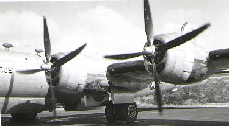
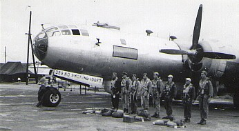
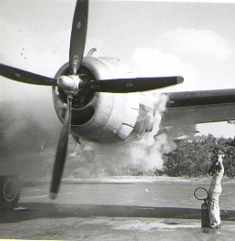
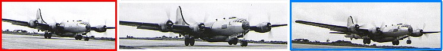

|
. . . supplied by Dewey Thomas.
Photos copyrighted 2001 by Dewey Thomas

Take-off sequence (below) shows how the B-29 main landing gear would sometimes lift off before the airplane seemed ready to fly. Fully loaded, the B-29 was a real ground hugger. |
 (Above) Crew Inspection prior to boarding.  A normal engine start could often resemble a
major flare up.
|

Use your browser's BACK button to return to the previous page